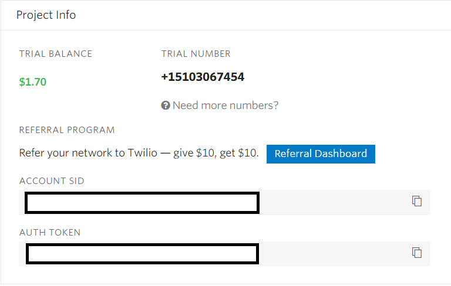
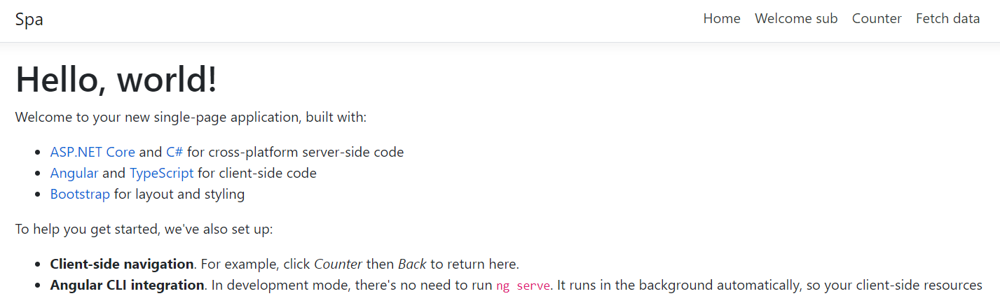

Installation
An OPENID server with bootstrap4 theme can be hosted in ASP.NET CORE project. There is one Nuget package per UI theme, at the moment only Bootstrap4 library is supported:
mkdir QuickStart
cd QuickStart
mkdir src
cd src
dotnet new openidinmembs4 -n OpenId
The following files will be created :
- Program.cs and OpenIdStartup.cs : application entry point.
- OpenIdDefaultConfiguration.cs : Resources of the OPENID server like : Client, Users and Scopes.
- Views and Areas.
- Resources : translations of the application.
In case the Visual Studio Support is needed, a solution can be created :
cd ..
dotnet new sln -n QuickStart
Add the OPENID server into the solution :
dotnet sln add ./src/OpenId/OpenId.csproj
Run the OPENID server and verify JSON is returned when you browse the following url : https://localhost:5001/.well-known/openid-configuration.
cd src/OpenId
dotnet run
The JSON returned should look like to something like this :

Check if the authentication flow is working:
- Browse the url : [https://localhost:5001/authorization?client_id=umaClient&redirect_uri=https://localhost:60001/signin-oidc&response_type=code&scope=openid profile&state=state](https://localhost:5001/authorization?client_id=umaClient&redirect_uri=https://localhost:60001/signin-oidc&response_type=code&scope=openid profile&state=state).
- Authenticate with the credentials - Login :
sub, Password :password. - Confirm the consent.
- User agent will be redirected to the callback url
https://localhost:60001, the authorization code is passed in the query.
Authentication Methods
Authentication Context Class Reference (ACR)
The Authentication Context Class Reference (ACR) specifies a set of business rules that the authentications are being requested to satisfy. These rules can often be satisfied by using a number of different authentication methods, either singly or in combination.
In short, the Authentication Context Class Reference (ACR) ensures the correctness of the user identity. In SimpleIdServer, the ACR is similar to the Level Of Assurance. The higher your Level Of Assurance, the better the identity of a user can be trusted.
It's up to the Relying Party to specify the ACR value. This value is passed in the "acr_values" parameter with the authorization query.
Example : If you want to authenticate with a Level Of Assurance equals to 2, navigate to the following URL : https://localhost:5001/authorization?client_id=umaClient&redirect_uri=https://localhost:60001/signin-oidc&response_type=code&scope=openid%20profile&state=state&acr_values=sid-load-02&prompt=login.
During the authentication flow, the user agent will be redirected to the Password and Sms authentication window.
The list of Authentication Context Class Reference (ACR) can be configured in the OpenIdDefaultConfiguration.cs file. By default, there are two ACR sid-load-01 and sid-load-02.
public static List<AuthenticationContextClassReference> AcrLst => new List<AuthenticationContextClassReference>
{
new AuthenticationContextClassReference
{
DisplayName = "First level of assurance",
Name = "sid-load-01",
AuthenticationMethodReferences = new List<string>
{
"pwd"
}
},
new AuthenticationContextClassReference
{
DisplayName = "Second level of assurance",
Name = "sid-load-02",
AuthenticationMethodReferences = new List<string>
{
"pwd",
"sms"
}
}
};
The list of available authentication methods are described in the next chapters.
| Authentication Method | Name |
|---|---|
| pwd | Login Password Authentication |
| Email Authentication | |
| sms | Sms Authentication |
Login Password Authentication
Authentication method : pwd
The Login Password authentication is included in the SimpleIdServer template. There is no need to install a specific nuget package.
Email Authentication
Authentication method : email
Email authentication can be configured on the OPENID server like this :
- Open a command prompt and navigate to the directory
src\OpenID. - Install the Nuget package
SimpleIdServer.UI.Authenticate.Email.Bootstrap4.
dotnet add package SimpleIdServer.UI.Authenticate.Email.Bootstrap4
- Open the
OpenIdStartup.csand add the following code afterAddLoginPasswordAuthenticationcall. Replace theSMTPUSERNAME,SMTPPASSWORD,FROMEMAIL,SMTPHOST,SMTPPORTwith the correct values.
AddEmailAuthentication(opts =>
{
opts.SmtpUserName = "<<SMTPUSERNAME>>";
opts.SmtpPassword = "<<SMTPPASSWORD>>";
opts.FromEmail = "<<FROMEMAIL>>";
opts.SmtpHost = "<<SMTPHOST>>";
opts.SmtpPort = <<SMTPPORT>>
})
| Property | Description | Default Value |
|---|---|---|
| SmtpUserName | Email is used to authenticate against the SMTP server | |
| SmtpPassword | Password is used to authenticate against the SMTP server | |
| FromEmail | Sender of the email | |
| SmtpHost | SMTP Host | smtp.gmail.com |
| SmtpPort | SMTP Port | 587 |
- Edit the
OpenIdDefaultConfiguration.csfile and add a new ACR :
new AuthenticationContextClassReference
{
DisplayName = "Second level of assurance",
Name = "sid-load-02-1",
AuthenticationMethodReferences = new List<string>
{
"pwd",
"email"
}
}
- Always in the
OpenIdDefaultConfiguration.csfile, update the EMAIL with yours :
new UserClaim(Jwt.Constants.UserClaims.Email, "<<EMAIL>>")
- Run the application
dotnet run
- Navigate to this URL https://localhost:5001/authorization?client_id=umaClient&redirect_uri=https://localhost:60001/signin-oidc&response_type=code&scope=openid%20profile&state=state&acr_values=sid-load-02-1&prompt=login
- Submit the credentials - Login :
sub, Password :password. - Submit the confirmation code received on your email.

SMS Authentication
Authentication method : sms
SimpleIdServer is using Twilio to send confirmation code to phones.
SMS authentication can be configured on the OPENID server like this :
- Open a command prompt and navigate to the directory
src\OpenId. - Install the Nuget package
SimpleIdServer.UI.Authenticate.Sms.Bootstrap4.
dotnet add package SimpleIdServer.UI.Authenticate.Sms.Bootstrap4
- Open the
OpenIdStartup.csand add the following code afterAddLoginPasswordAuthenticationcall. Replace theACCOUNTSID,AUTHTOKENandFROMPHONENUMBERwith the correct values, for more information refer to the official website.
AddSMSAuthentication(opts =>
{
opts.AccountSid = "<<ACCOUNTSID>>";
opts.AuthToken = "<<AUTHTOKEN>>";
opts.FromPhoneNumber = "<<FROMPHONENUMBER>>";
})

- Open the
OpenIdDefaultConfiguration.csfile, and update the PHONENUMBER with yours :
new UserClaim(SimpleIdServer.Jwt.Constants.UserClaims.PhoneNumber, "<<PHONENUMBER>>")
- Run the application.
dotnet run
- Navigate to this URL https://localhost:5001/authorization?client_id=umaClient&redirect_uri=https://localhost:60001/signin-oidc&response_type=code&scope=openid%20profile&state=state&acr_values=sid-load-02&prompt=login
- Submit the credentials - Login :
sub, Password :password. - Submit the confirmation code received on your phone.

Persistence
By default, all the assets like "Clients", "Scopes", "Users" and "JSON Web Keys" are stored in memory. The following data storage can be used.
SQLServer
!!! note
There is a SimpleIdServer template to create a new project with EF support, using dotnet new openidefbs4.
Pre-requisite : OPENID server must be installed in the Visual Studio Solution.
SQL Server data storage can be configured like this :
- In a command prompt, navigate to the directory
src\OpenId. - Install the Nuget package
SimpleIdServer.OpenID.EF.
dotnet add package SimpleIdServer.OpenID.EF
- Install the Nuget package
Microsoft.EntityFrameworkCore.SqlServer
dotnet add package Microsoft.EntityFrameworkCore.SqlServer
- Install the Nuget package
Microsoft.EntityFrameworkCore.Design.
dotnet add package Microsoft.EntityFrameworkCore.Design
- Create an
OpenIdMigrationclass and replace the content with the following code. The CONNECTIONSTRING must be updated :
public class OpenIDMigration : IDesignTimeDbContextFactory<OpenIdDBContext>
{
public OpenIdDBContext CreateDbContext(string[] args)
{
var migrationsAssembly = typeof(OpenIdStartup).GetTypeInfo().Assembly.GetName().Name;
var builder = new DbContextOptionsBuilder<OpenIdDBContext>();
builder.UseSqlServer("<<CONNECTIONSTRING>>", optionsBuilder => optionsBuilder.MigrationsAssembly(migrationsAssembly));
return new OpenIdDBContext(builder.Options);
}
}
- Execute the following command line, the migration scripts will be created
dotnet ef add migrations Init
- Execute the following command line, the tables will be created in the database :
dotnet ef database update`
- Open the
Startup.csfile, replace any existing calls toAddClients,AddAcrs,AddUsers,AddJsonWebKeyswithAddOpenIDEF. The CONNECTIONSTRING must be updated.
services
.AddSIDOpenID()
.AddOpenIDEF(opt => opt.UseSqlServer("<<CONNECTIONSTRING>>", o => o.MigrationsAssembly(typeof(OpenIdStartup).GetTypeInfo().Assembly.GetName().Name)))
.AddLoginPasswordAuthentication();
Protect application from undesirable users
Recommended flow by application type
There are different grant-types to get tokens, the choice depends on the type of application.

| Applications | Recommended Configuration |
|---|---|
| Server-Side (Web application) - ASP.NET CORE | Grant-Type : authorization code |
| Single Page Application (SPA) - Angular | Grant-Type : authorization code, Client Authentication Method : PKCE |
| Native - Mobile, WPF application | Grant-Type : authorization code, Client Authentication Method : PKCE |
| Trusted | Grant-Type : password |
Server-Side application
Example : ASP.NET CORE application.
Server-Side application should use authorization code grant-type.
!!! warning Before you start, Make sure there is a Visual Studio Solution with a configured OpenId server.
Source Code
The source code of this project can be found here.
Configure OpenId Server
The first step consists to configure the OPENID client.
- Open the Visual Studio Solution and edit the
OpenIdDefaultConfiguration.csfile. - Add a new OpenId client :
new OpenIdClient
{
ClientId = "website",
ClientSecret = "websiteSecret",
ApplicationKind = ApplicationKinds.Web,
TokenEndPointAuthMethod = "client_secret_post",
ApplicationType = "web",
UpdateDateTime = DateTime.UtcNow,
CreateDateTime = DateTime.UtcNow,
TokenExpirationTimeInSeconds = 60 * 30,
RefreshTokenExpirationTimeInSeconds = 60 * 30,
TokenSignedResponseAlg = "RS256",
IdTokenSignedResponseAlg = "RS256",
AllowedScopes = new List<OAuthScope>
{
SIDOpenIdConstants.StandardScopes.OpenIdScope,
SIDOpenIdConstants.StandardScopes.Profile,
SIDOpenIdConstants.StandardScopes.Email
},
GrantTypes = new List<string>
{
"authorization_code",
},
RedirectionUrls = new List<string>
{
"https://localhost:7000/signin-oidc"
},
PreferredTokenProfile = "Bearer",
ResponseTypes = new List<string>
{
"token",
"id_token"
}
}
- Run the OPENID server.
cd src\OpenId
dotnet run
Create ASP.NET CORE application
The last step consists to create and configure an ASP.NET CORE project.
- Open a command and navigate to the
srcsubfolder of your project. - Create a directory
AspNetCoreand create an ASP.NET CORE project in it :
mkdir AspNetCore
dotnet new mvc -n AspNetCore
- Navigate to the directory
AspNetCoreand install the Nuget packageMicrosoft.AspNetCore.Authentication.OpenIdConnect.
dotnet add package Microsoft.AspNetCore.Authentication.OpenIdConnect
- Add the
AspNetCoreproject into your Visual Studio solution.
cd ..\..
dotnet sln add ./src/AspNetCore/AspNetCore.csproj
- Edit the
Startup.csfile and configure the OpenId authentication. In theConfigureServicesprocedure, add the following code :
services.AddAuthentication(options =>
{
options.DefaultScheme = "Cookies";
options.DefaultChallengeScheme = "sid";
})
.AddCookie("Cookies")
.AddOpenIdConnect("sid", options =>
{
options.SignInScheme = "Cookies";
options.Authority = "http://localhost:5000";
options.RequireHttpsMetadata = false;
options.ClientId = "website";
options.SaveTokens = true;
});
- To ensure the authentication services execute on each request, add
UseAuthenticationin theConfigureprocedure. The procedure should look like to something like this :
public void Configure(IApplicationBuilder app, IWebHostEnvironment env)
{
app.UseHttpsRedirection();
app.UseStaticFiles();
app.UseRouting();
app.UseAuthentication();
app.UseAuthorization();
app.UseEndpoints(endpoints =>
{
endpoints.MapControllerRoute(
name: "default",
pattern: "{controller=Home}/{action=Index}/{id?}");
});
}
- Add a
ClaimsControllerwith one protected operation :
public class ClaimsController : Controller
{
[Authorize]
public IActionResult Index()
{
return View();
}
}
- Create a new view
Views\Claims\Index.cshtml. It will display all the claims of the authenticated user.
<ul>
@foreach (var claim in User.Claims)
{
<li>@claim.Type : @claim.Value</li>
}
</ul>
- In a command prompt, navigate to the directory
src\AspNetCoreand run the application under the port7000.
dotnet run --urls=https://localhost:7000
- Browse this URL https://localhost:7000/claims, the User-Agent is automatically redirected to the OPENID server.
Submit the credentials - login :
sub, password :passwordand confirm the consent. You'll be redirected to the following screen where your claims will be displayed.

Single Page Application (SPA)
Example: Angular application.
SPA application use authorization code grant-type with PKCE client authentication method.
!!! warning Before you start, Make sure there is a Visual Studio Solution with a configured OpenId server.
Source Code
The source code of this project can be found here.
Configure OpenId Server
The first step consists to configure the OPENID client.
- Open the Visual Studio solution and edit
OpenIdDefaultConfiguration.csfile. - Add a new OpenId client:
new OpenIdClient
{
ClientId = "website",
ClientSecret = "websiteSecret",
ApplicationKind = ApplicationKinds.SPA,
TokenEndPointAuthMethod = "pkce",
ApplicationType = "web",
UpdateDateTime = DateTime.UtcNow,
CreateDateTime = DateTime.UtcNow,
TokenExpirationTimeInSeconds = 60 * 30,
RefreshTokenExpirationTimeInSeconds = 60 * 30,
TokenSignedResponseAlg = "RS256",
IdTokenSignedResponseAlg = "RS256",
AllowedScopes = new List<OAuthScope>
{
SIDOpenIdConstants.StandardScopes.OpenIdScope,
SIDOpenIdConstants.StandardScopes.Profile,
SIDOpenIdConstants.StandardScopes.Email,
SIDOpenIdConstants.StandardScopes.Role
},
GrantTypes = new List<string>
{
"authorization_code"
},
RedirectionUrls = new List<string>
{
"http://localhost:4200"
},
PreferredTokenProfile = "Bearer",
ResponseTypes = new List<string>
{
"token",
"id_token",
"code"
}
}
- Run the OPENID server.
cd src\OpenId
dotnet run
Create angular application
The last step consists to create and configure an Angular project.
- Open a command prompt and navigate to the
srcsubfolder of your project. - Create an ASP.NET CORE with angular project, its name must be
Spa.
mkdir Spa
dotnet new angular -n Spa
- Navigate to the directory
Spa\ClientAppand install the npm packageangular-oauth2-oidc.
cd Spa\ClientApp
npm i angular-oauth2-oidc --save
- Add the
Spaproject into your Visual Studio solution.
cd ..\..\..
dotnet sln add ./src/Spa/Spa.csproj
- Edit the file
ClientApp\src\app\app.module.tsand import theOAuthModulemodule.
@NgModule({
declarations: [
// etc.
],
imports: [
// etc.
OAuthModule.forRoot()
],
providers: [],
bootstrap: []
})
export class AppModule { }
- Create an
auth-config.tsfile in the directoryClientApp\src\app, replace its content with the following code. This file contains the authentication settings : Url of the identity provider or the Client Identifier.
import { AuthConfig } from 'angular-oauth2-oidc';
export const authCodeFlowConfig: AuthConfig = {
issuer: 'http://localhost:5000',
redirectUri: window.location.origin,
clientId: 'website',
responseType: 'code',
scope: 'openid profile email role',
showDebugInformation: true,
};
- Edit the
ClientApp\src\app\nav-menu\nav-menu.component.tsfile, import theauthCodeFlowConfigJSON object, inject theOAuthServiceinto the constructor and add aloginprocedure. This procedure will be called to initiate the authentication workflow.
import { OAuthService } from 'angular-oauth2-oidc';
import { authCodeFlowConfig } from '../auth-config';
@Component({
selector: 'app-nav-menu',
templateUrl: './nav-menu.component.html',
styleUrls: ['./nav-menu.component.css']
})
export class NavMenuComponent {
isConnected: boolean = false;
name: string;
constructor(private oauthService: OAuthService) {
this.oauthService.configure(authCodeFlowConfig);
this.oauthService.loadDiscoveryDocumentAndTryLogin();
var claims: any = this.oauthService.getIdentityClaims();
if (!claims) {
return;
}
this.isConnected = true;
this.name = claims["sub"];
}
login(evt: any) {
evt.preventDefault();
this.oauthService.initImplicitFlow();
}
}
- Edit the `ClientApp\src\app\nav-menu\nav-menu.component.html' file and add a login button.
<li class="nav-item" *ngIf="!isConnected">
<a class="nav-link text-dark" (click)="login($event)">Authenticate</a>
</li>
<li class="nav-item" *ngIf="isConnected">
<a class="nav-link text-dark">Welcome {{name}}</a>
</li>
- In a command prompt, navigate to the
src\Spadirectory and launch the project.
dotnet run --urls=http://localhost:4200
- Navigate to the website http://localhost:4200 and authenticate with the login :
suband password :password.
